Vanderbilt · Anchor's Edge · ATD facilitator guide · print edition
Internal Bridges, the facilitator guide

Run of show
| Screen | Full (min) | Core (min) |
|---|---|---|
| Welcome / QR | 2 | 1 |
| The mission | 2 | 1 |
| The goal we are targeting | 2 | 1 |
| Objectives | 1 | 1 |
| Agenda | 1 | skip |
| Networking without the ick | 8 | 6 |
| The 20-minute coffee | 10 | 7 |
| Keeping bridges warm | 9 | 6 |
| The core idea | 1 | skip |
| Recap quiz | 4 | 3 |
| Capstone commitment | 4 | 3 |
| Closing | 1 | 1 |
| Total | 45 | 30 |
The goal this month serves
Goal 1, Workforce Intelligence & Transfer Portal. Baseline 6% of BUs, Q4 target 85% of BUs.
Audience
All Vanderbilt staff in the Anchor's Edge weekly rhythm; no management experience assumed. Works for 6 to 40 on a call; breakouts run in pairs. No prerequisites; April is the Transfer Portal in Practice month, and this session builds its human network.
Room setup
Virtual, instructor led: camera on, deck link in chat, breakouts of 2 available. Learners follow on their own screens via the welcome-slide link or QR. Nothing typed into the deck is saved or sent.
Materials
- Meeting platform with screen share and breakout rooms; deck link ready to paste in chat
- Facilitator machine with the facilitator edition open; notifications off
- Learners on their own devices with the learner link
- Chat open for share-outs; the capstone copy button pastes there cleanly
A week before
- Run the learner edition start to finish and do every interaction honestly; you will demo at least one live.
- Read this month's theme page on the Anchor's Edge dashboard so the goal tie-in is fluent.
- Send the invite with the learner link and one line on what to bring.
The day before
- Test screen share with the facilitator edition; confirm the notes rail is readable.
- Open the learner link on a second device; the QR must land there.
- Run the section interactions once so you can drive them without reading.
30 minutes before
- Welcome slide up as people join; link pasted in chat.
- Close every other tab; silence the machine.
- Breakout rooms pre-configured in pairs.
When things go sideways
If Screen share or the site fails mid-session: Paste the learner link in chat and narrate from your own browser; every interaction runs on learner devices without the share.
If Breakout rooms are unavailable: Run the breakout prompts as 60-second chat storms: everyone types their answer at once, you read the best three aloud.
If Someone says they have no time for networking: Do the math aloud: one 20-minute coffee and two 2-minute follow-ups a month is under half an hour. Compare that with the cost of starting every search, project, and question from cold.
If A participant wants to network only for a specific job they are chasing: Honor the goal and widen the frame: a live application is Portal work, and a navigator can help today. Bridges are the long game that means the next opportunity finds them.
Tough questions, ready answers
Q: Isn't this just politics with better branding?
Politics is managing impressions; this is trading genuine curiosity. The test is simple: if the other person got nothing from the exchange, it was politics. A good coffee leaves them feeling interesting and you knowing more. Both sides gained.
Q: I'm an introvert. Is there a version of this for me?
This is the introvert version: one person, twenty minutes, prepared questions, and listening as the main event. The model that requires working a room is the one we threw out in section one.
Q: What if I invite someone senior and they ignore me?
Expect some silence; senior calendars eat invites. A specific, bounded, curious invite lands better than you fear, and one gentle nudge after two weeks is fine. After that, pick another door; curiosity has plenty of targets.
Copy-paste templates
Pre-work invite (paste into the calendar invite)
Subject: Thursday, 45 minutes on networking without the ick. Bring one team at Vanderbilt you are genuinely curious about. That is the only homework. Live and interactive; have the session link open on your own screen.
7-day pulse (send one week after)
Subject: Did the bridge move happen? Three lines, reply whenever: 1) Did the invite or follow-up on your card go out? 2) What did you learn that you could never have guessed? 3) Which bridge is next?
After the session
Seven days out, send the pulse: 'Did the bridge move on your card happen? What did you learn that you could never have guessed? Which bridge is next?' Count of sent invites and follow-ups is the Level 3 metric for the month.
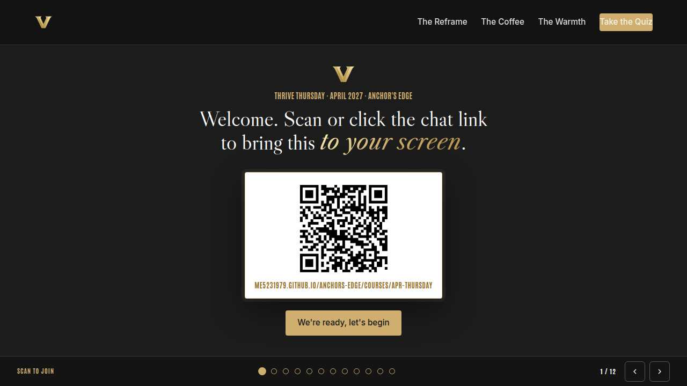
Welcome / QR Full 2 min · Core 1
Get everyone into the deck on their own screen and set the tone: 45 minutes, live, hands on.
Say
“Welcome to Thrive Thursday. Scan the code or click the link in chat so this session runs on your screen too. Forty-five minutes, one focus: Networking without the ick: building internal bridges.”
Do
- Slide up as people join; link pasted in chat every few minutes.
- State the norm once: type into your own screen, nothing you enter is saved or sent.
Watch for: People lurking without the deck open. The interactions only land if the deck is on their screen.
Transition: “Before the topic, thirty seconds on why Vanderbilt is asking for this hour.”
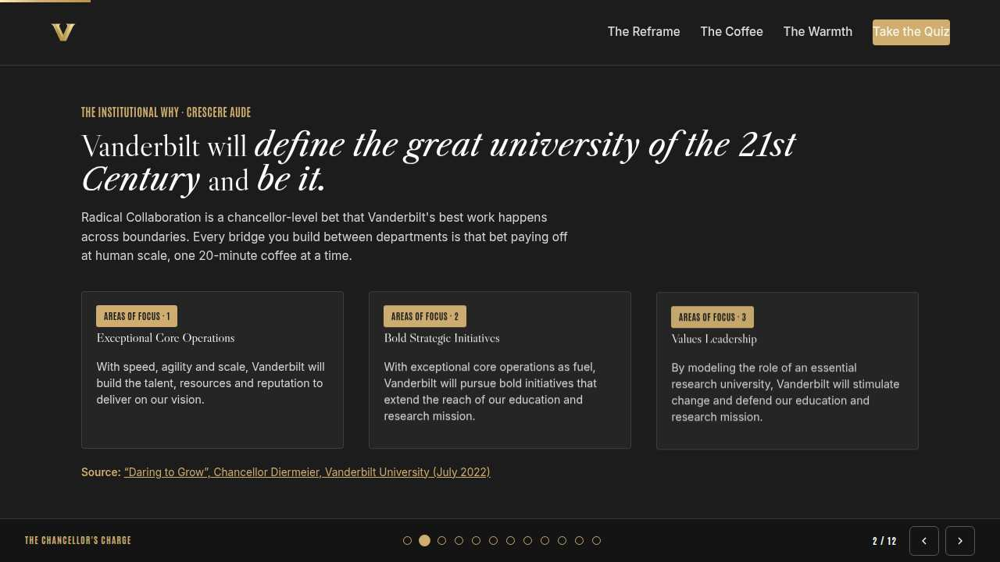
The mission Full 2 min · Core 1
Anchor the session in the Chancellor's charge so the next 40 minutes read as mission work, not admin.
Say
“This year of learning hangs off one sentence from the Chancellor: Vanderbilt will define the great university of the 21st Century and be it. Radical Collaboration is a chancellor-level bet that Vanderbilt's best work happens across boundaries. Every bridge you build between departments is that bet paying off at human scale, one 20-minute coffee at a time.”
Do
- Read the mission line slowly, once.
- Point at the tie-in line and let it sit; no discussion needed here.
Transition: “That is the why. Here is the number we are moving.”
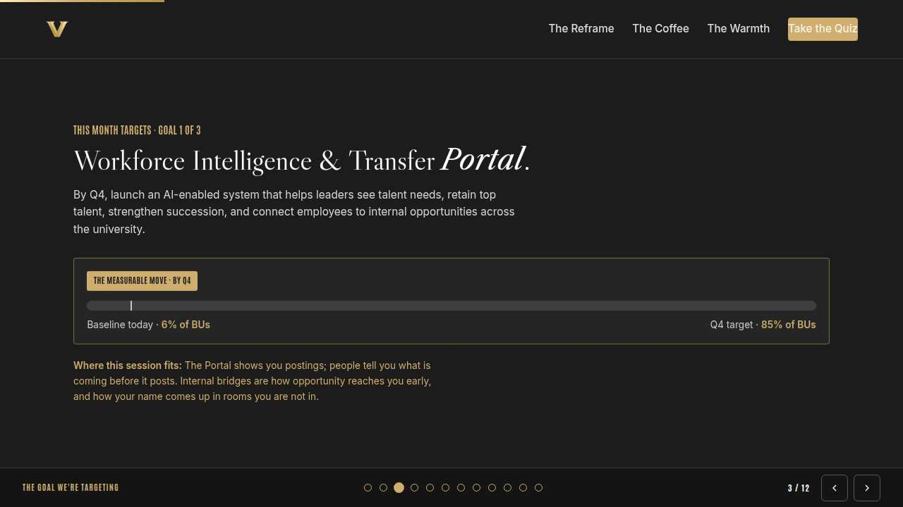
The goal we are targeting Full 2 min · Core 1
Name the enterprise goal this month serves and the measurable move it needs.
Say
“Every month of Anchor's Edge lands on one of three enterprise goals. This month is Goal 1, Workforce Intelligence & Transfer Portal: By Q4, launch an AI-enabled system that helps leaders see talent needs, retain top talent, strengthen succession, and connect employees to internal opportunities across the university. Today's baseline is 6% of BUs; the Q4 target is 85% of BUs. The Portal shows you postings; people tell you what is coming before it posts. Internal bridges are how opportunity reaches you early, and how your name comes up in rooms you are not in.”
Do
- Let the meter animate before you speak to the number.
- One line, not a lecture: this session is one of the moves that closes the gap.
Transition: “Here is what you will be able to do in 45 minutes.”
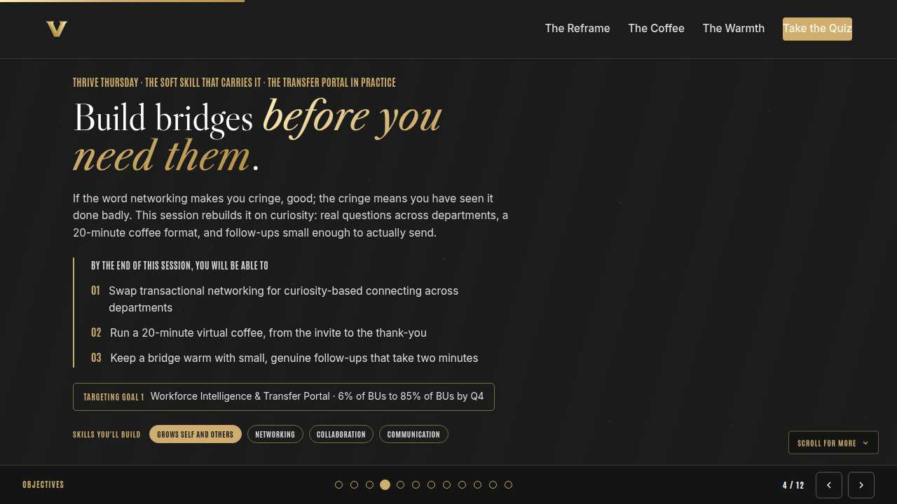
Objectives Full 1 min · Core 1
Set the contract for the session in under a minute.
Say
“By the end of this session: swap transactional networking for curiosity-based connecting across departments; run a 20-minute virtual coffee, from the invite to the thank-you; keep a bridge warm with small, genuine follow-ups that take two minutes. That is the whole contract.”
Do
- Read the three objectives briskly; do not elaborate yet.
Transition: “Three stops to get there.”
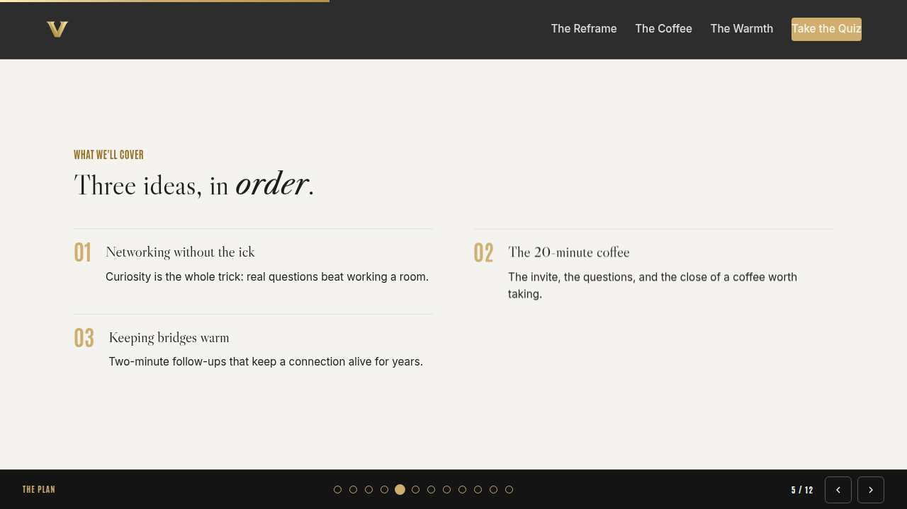
Agenda Full 1 min · Core skip
Show the path so the room can pace itself.
Say
“Three stops: networking without the ick, the 20-minute coffee, keeping bridges warm. Each one has something to play with, so keep the deck open.”
Do
- Point once at each stop; ten seconds each.
Transition: “Stop one.”
Core path: Core: skip the read-through, gesture at the slide in passing.
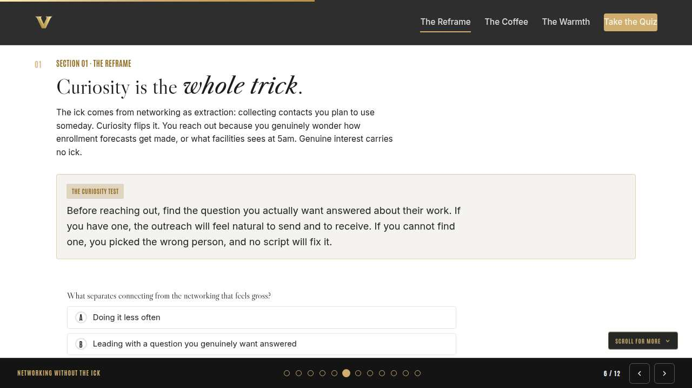
Networking without the ick Full 8 min · Core 6
Replace networking-as-extraction with curiosity-based connecting.
Say
“Let's name it: for most people, the word networking triggers a small full-body cringe. Good. The cringe is accurate; it is what extraction feels like from the outside. Today we throw that version out. The replacement runs on one fuel: genuine curiosity about how other people's work actually happens. You will never need a script again, because a real question is the script.”
Do
- Read the curiosity test card aloud once.
- Run the knowledge check; ask in chat for a one-word answer to 'what makes networking feel gross?'
- Run the breakout: one team you are curious about and the question you would ask.
Ask
“Which Vanderbilt team's work are you genuinely curious about?”
Expect:
- Often a team they collaborate with but have never really met
- Sometimes something completely unrelated to their role
Respond: Notice how easy that question was. That is the whole reframe: your curiosity already exists; networking is just letting it out of the building.
Debrief: The curiosity test does the filtering: a real question means the right person, and no question means the wrong one.
Watch for: Self-identified introverts opting out early. Name it: this model favors them; one genuine question beats an hour of working a room.
Transition: “Curiosity needs a container. Ours is twenty minutes long.”
Core path: Core: skip the breakout; take three curiosity targets in chat.
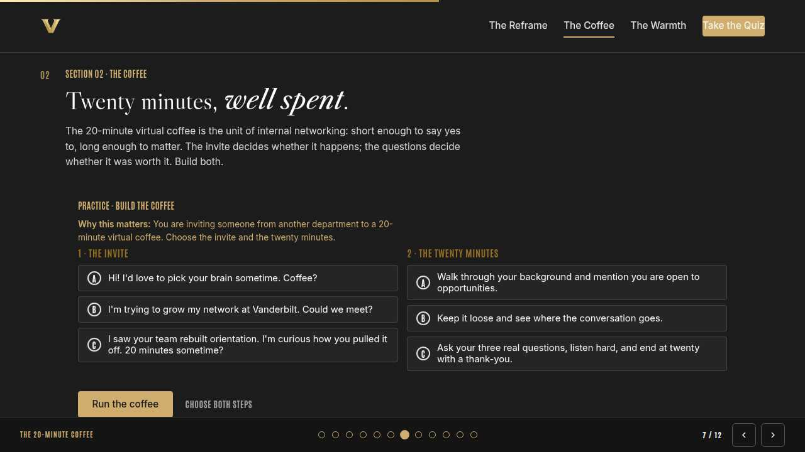
The 20-minute coffee Full 10 min · Core 7
Give everyone a repeatable format: the specific bounded invite and the question-led twenty minutes.
Say
“The unit of internal networking is the 20-minute virtual coffee. Twenty minutes is short enough that a stranger says yes and long enough to actually learn something. But the coffee is won or lost in the invite: specific about their work, honest about your curiosity, and bounded in time. Then the twenty minutes themselves: your questions, their answers, your full attention, and a clean ending.”
Do
- Run Build the coffee; two minutes to choose both slots and run it.
- Ask one volunteer to read their outcome aloud, weak or strong.
- Point at the pattern: specific bounded invite, question-led minutes.
Ask
“Why does ending at twenty minutes matter so much?”
Expect:
- It respects their calendar
- It proves you meant the invite
- It leaves them wanting more
Respond: All three, and it compounds: the person who ends on time is the person whose next invite gets accepted within the hour.
Debrief: Specific invite, real questions, clean ending. The format is small on purpose; small is what makes it repeatable.
Watch for: People drafting invites that are secretly job inquiries. Redirect to the curiosity test: the coffee is for learning, and opportunity follows on its own.
Transition: “One good coffee is a plank. Keeping it warm is what makes it a bridge.”
Core path: Core: everyone runs the builder solo; skip the read-aloud.
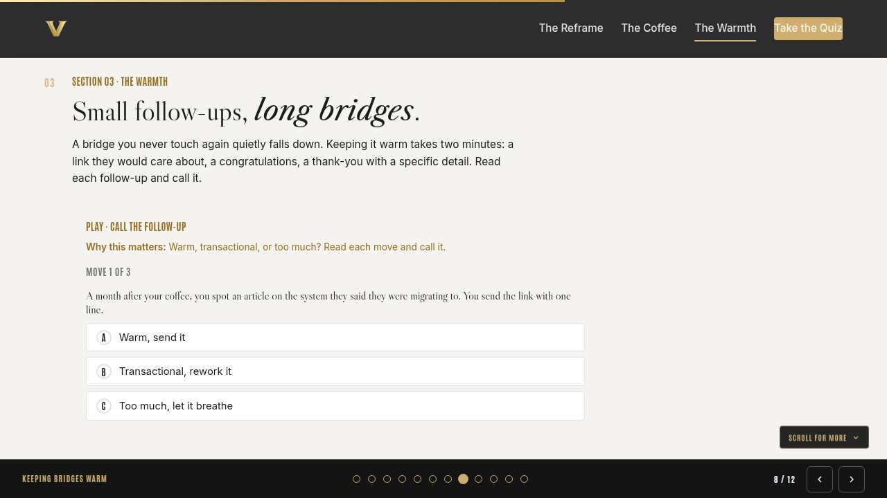
Keeping bridges warm Full 9 min · Core 6
Install the two-minute warm follow-up habit and the instincts for cadence.
Say
“Here is where most bridges die: the coffee goes great, everyone means to stay in touch, and eleven months later the connection is too cold to use. The fix costs two minutes: a link about something they mentioned, a congratulations on their project, a thank-you with one specific detail. Specific, generous, occasional. That cadence keeps a bridge warm for years, and it is the difference between a contact list and a network.”
Do
- Run Call the follow-up live; everyone plays on their own screen.
- After round two, pause on the resume-after-silence pattern; ask why it lands so badly.
- Run the breakout: one contact and the two-minute follow-up you could send.
Ask
“What makes the article-link follow-up in round one so effective?”
Expect:
- It proves you listened
- It asks for nothing
- It takes two minutes
Respond: Right. Generosity at two-minute scale is the most underpriced move in professional life. Nobody forgets the person who remembered.
Debrief: Warm follow-ups are specific, generous, and occasional. The bridge you keep warm is the one that carries opportunity later.
Watch for: People turning the follow-up into a scheduled campaign. Keep it human: when you genuinely think of them, send the two minutes.
Transition: “Quick recap, then you pick your first bridge.”
Core path: Core: run the trainer, skip the breakout, take one voice on the debrief question.
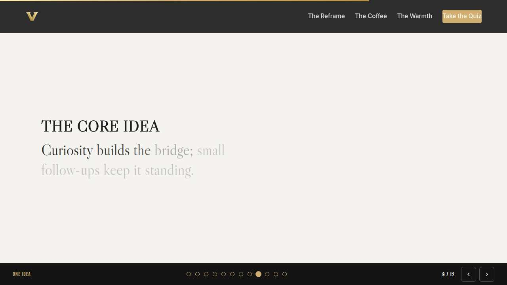
The core idea Full 1 min · Core skip
Land the one sentence the session exists to install.
Say
“If you keep one sentence from today, this is it. Read it once, out loud: Curiosity builds the bridge; small follow-ups keep it standing.”
Do
- Pause two beats after reading; the word animation carries it.
Transition: “The recap makes it stick.”
Core path: Core: pass through in stride; the sentence reads itself.
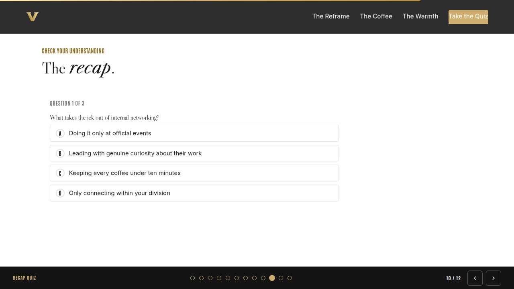
Recap quiz Full 4 min · Core 3
Score the learning while it is fresh; wrong answers are teaching moments, not failures.
Say
“Three questions, on your own screen. Answer honestly; the explanations are where the learning sticks.”
Do
- Give the room 90 seconds to run it individually.
- Ask for a show of results in chat: how many got 3 of 3?
- Read out the explanation for whichever question drew the most misses.
Watch for: Rushing past the why lines. The explanations carry the teaching.
Transition: “Now point it at your real week.”
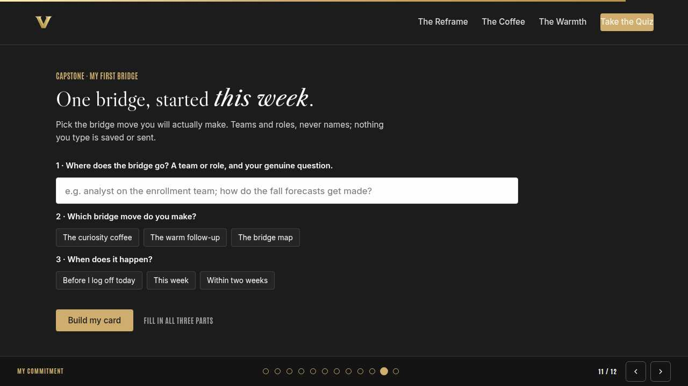
Capstone commitment Full 4 min · Core 3
Convert the session into one named, dated action per person.
Say
“Now make it real. One bridge: a team, your genuine question, and the move you will make. Teams and roles, never names. Build the card and copy it somewhere you will see it before Friday. Two minutes, quiet, go.”
Do
- Two quiet minutes; everyone builds their own card.
- Invite two or three volunteers to read their card aloud or paste it in chat.
- Remind: copy the card somewhere you will see it this week.
Watch for: Vague entries. Nudge for a name-able situation and a real date.
Transition: “Last slide.”
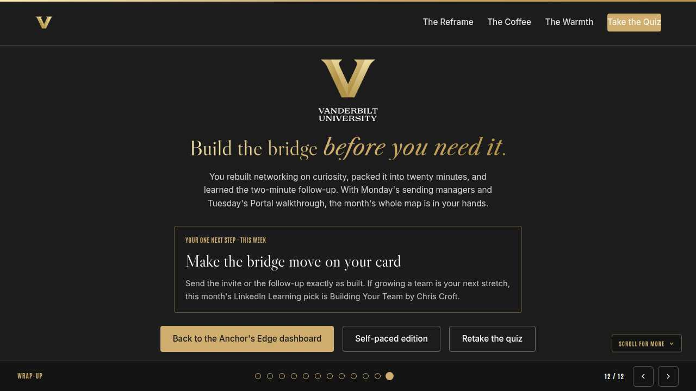
Closing Full 1 min · Core 1
End with the next step and where this thread continues.
Say
“You leave with a curiosity test, a coffee format, and a two-minute habit. That closes the Transfer Portal week: Monday gave managers the sending mindset, Tuesday walked the Portal end to end, and today built the bridges that carry the news. If you want more this month, the navigators are running a live Portal walkthrough and a skill-profile clinic, and the LinkedIn Learning pick is Building Your Team by Chris Croft. Next week Anchor's Edge turns to May and a new theme; same time, same rhythm.”
Do
- Point at the next-step card; one sentence.
- Name the rest of the week's rhythm: the other sessions echo this month's theme.
Generated from facilitator/notes.json. The on-screen facilitator edition lives at ./ alongside this guide.